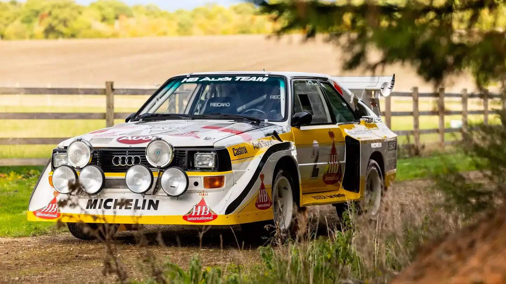
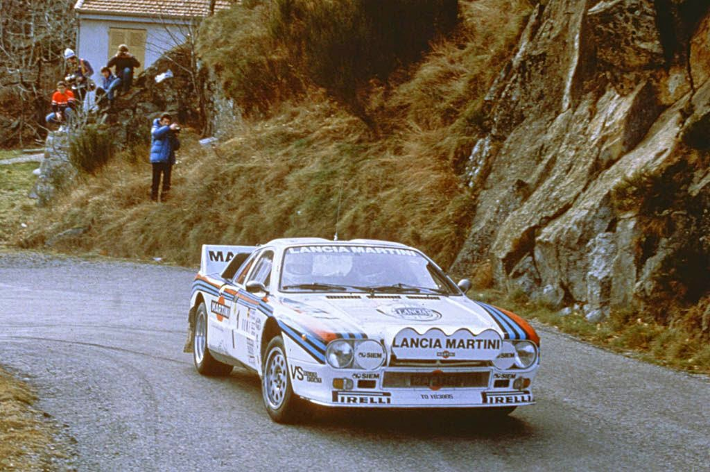
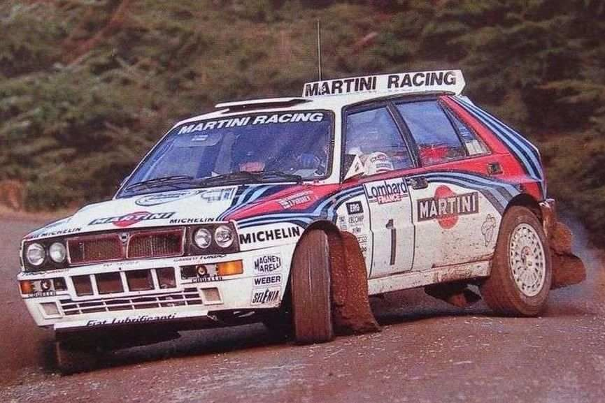
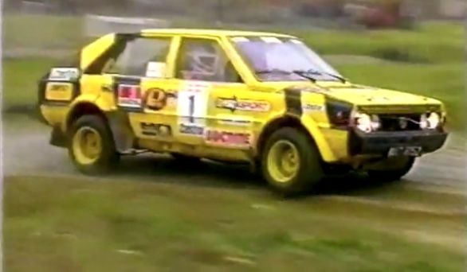
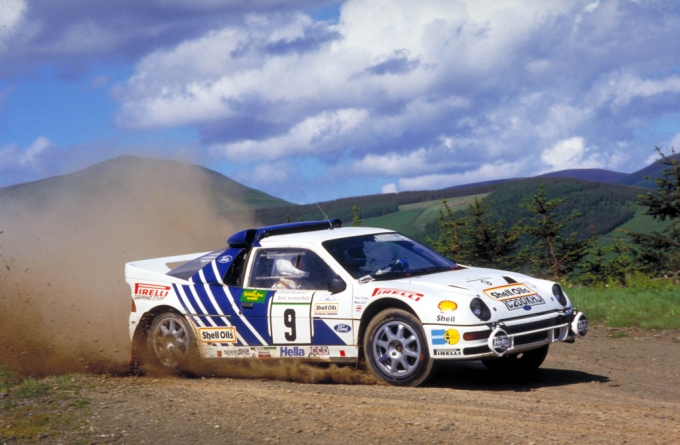
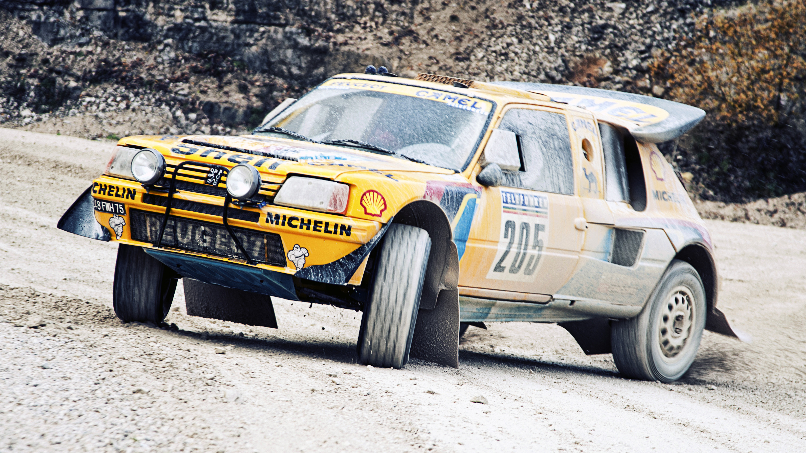
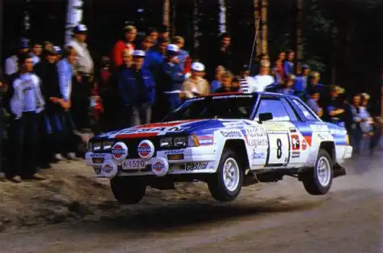

7 LEGENDARNYCH SAMOCHODÓW RAJDOWYCH GRUPY B
Audi Sport Quattro S1 E2 to legendarny samochód rajdowy, który w latach 80. zdobył sławę dzięki swoim osiągnięciom w światowym rajdowym mistrzostwie. Jego historia zaczyna się w latach 80., gdy Audi zdecydowało się zaangażować w rajdy z modelem Quattro, który został pierwszym samochodem napędzanym na cztery koła w historii rajdów.
W 1984 roku Audi wprowadziło do rywalizacji nowy model - Sport Quattro S1. Ten pojazd był ulepszoną wersją poprzednika i został skonstruowany z myślą o spełnieniu nowych regulacji rajdowych, które wymagały produkcji pewnej liczby egzemplarzy homologacyjnych samochodu dla zatwierdzenia w rajdach. Sport Quattro S1 E2 (Evolution 2) to jeszcze bardziej zaawansowana i doskonała wersja, zaprezentowana w 1985 roku.
Samochód ten napędzany był przez potężny, turbodoładowany silnik pięciocylindrowy o pojemności 2,1 litra. Dzięki zastosowaniu technologii Quattro, czyli napędu na wszystkie koła, samochód doskonale radził sobie z trudnymi warunkami terenowymi i niekorzystnymi warunkami pogodowymi, co czyniło go niezwykle konkurencyjnym w rajdach.
Najbardziej ikonicznym momentem w historii tego modelu było jego uczestnictwo w rajdzie Pikes Peak International Hill Climb w 1986 roku, gdzie zdobył pierwsze miejsce z niesamowitym czasem. Audi Sport Quattro S1 E2 stał się symbolem potęgi, niezawodności i innowacji, przyczyniając się do legendy marki Audi w świecie rajdów.

Lancia 037 Rally to legendarny samochód rajdowy, który święcił triumfy w latach 80., zdobywając miano jednego z najbardziej wyjątkowych pojazdów rajdowych swojej epoki. Jego historia rozpoczęła się w połowie lat 70., kiedy FIA wprowadziła regulacje, które wymagały produkcji pewnej liczby egzemplarzy cywilnych, aby samochód mógł startować w rajdach.
W 1982 roku Lancia, we współpracy z firmą Abarth, przedstawiła model 037, który był stworzony do rywalizacji w grupie B. Samochód ten bazował na modelu Montecarlo, jednak był gruntownie zmodyfikowany, aby sprostać wymogom rajdowym. Wersja rallyjna została oznaczona jako Lancia 037 Rally.
Napędzany przez turbodoładowany silnik dwulitrowy o konstrukcji czterocylindrowej, umieszczony centralnie, samochód ten charakteryzował się nie tylko świetnym osiąganiem mocy, ale także wyrafinowanym systemem zawieszenia oraz lekką karoserią wykonaną z kompozytów. Kluczowym elementem był również napęd na tylną oś, co w połączeniu z zaawansowanym systemem trakcji sprawiało, że Lancia 037 była konkurencyjna na różnorodnych trasach rajdowych.
W 1983 roku, przy współpracy z pilotem rajdowym Markku Alénem, Lancia 037 Rally zdobyła swój pierwszy tytuł mistrza świata w rajdach. Jednak prawdziwe triumfy przyszły w 1985 roku, kiedy Lancia wywalczyła tytuły zarówno wśród kierowców, jak i producentów.
Historia Lancia 037 Rally to nie tylko seria sukcesów, ale także legenda w świecie rajdów, symbolizująca doskonałą kombinację innowacyjnej technologii, umiejętności kierowcy i niepowtarzalnego stylu włoskiego designu. Wprowadzenie regulacji Grupy B zakończyło okres tej legendy, ale Lancia 037 Rally pozostaje trwałym śladem w historii motorsportu.

Lancia Delta Integrale to legendarny samochód rajdowy, który zdobył serca miłośników motoryzacji i osiągnął wielki sukces w światowym rajdowym mistrzostwie. Jego historia zaczęła się w 1979 roku, kiedy Lancia wprowadziła model Delta na rynek. Jednak prawdziwe triumfy rozpoczęły się, gdy Delta stała się bazą dla wersji rajdowej - Integrale.
W 1987 roku zaprezentowano Lancię Delta HF Integrale, a później wprowadzono wersję Integrale 8V, która była napędzana przez silnik 2.0 litra o osiemnastu zaworach. Jednak prawdziwa magia zaczęła się w 1989 roku, kiedy pojawiła się wersja Delta Integrale 16V. Ta wersja była wyposażona w mocniejszy silnik i system napędu na wszystkie koła, co sprawiło, że samochód stał się niezwykle konkurencyjny w rajdach.
Delta Integrale szybko zdobyła uznanie w świecie motorsportu, a jej dominacja w rajdowym świecie była niekwestionowana. W latach 1987-1992 Delta Integrale zdobyła siedem tytułów mistrza świata w rajdach z rzędu, co jest imponującym osiągnięciem.
Samochód ten nie tylko odnosił sukcesy na trasach rajdowych, ale także zyskał uznanie wśród entuzjastów ulicznych aut. Jego charakterystyczny wygląd, osiągi i technologia sprawiły, że stał się jednym z najbardziej pożądanych hatchbacków sportowych tamtej epoki.
Mimo że produkcja Lancia Delta Integrale zakończyła się w 1994 roku, samochód ten pozostał żywą legendą w historii motoryzacji, a jego wpływ na świat rajdów i miłośników sportowych samochodów utrzymuje się do dziś.

1 kwietnia 1984 Polonez otrzymał homologację do grupy B. W samochodzie tym stosowano gaźniki, wtrysk mechaniczny i wtrysk elektroniczny. Zastosowano szyby boczne z poliwęglanu, małe stalowe zderzaki z seryjnego Poloneza C. Zamontowano przednie spoilery z kierownicami strug powietrza, które kierowały powietrze na wycięte wloty pod zderzakiem w celu chłodzenia hamulców. Z Poloneza zdemontowano chromowane dodatki i gumową lotkę sprzed przedniej maski. Polonez ten posiadał moc około 210 koni mechanicznych. Zastosowano żółty lakier z ciemnoniebieskimi czworobokami i pasami czyli malowanie FSO Sport. Na początku lat 90 FSO Sport i OBRSO wycofało się ze startów w rajdach samochodowych. Wszystkie egzemplarze zostały rozebrane i sprzedane na części. Dziś można spotkać tylko repliki rajdowych Polonezów.

Ford RS200 to ikoniczny samochód rajdowy, który został zaprojektowany specjalnie do rywalizacji w grupie B mistrzostw świata w rajdach. Historia tego modelu sięga lat 80., kiedy FIA (Fédération Internationale de l'Automobile) wprowadziła regulacje grupy B, pozwalając na produkcję limitowanej serii cywilnych pojazdów w celu homologacji do startów w rajdach.
RS200 został zaprezentowany w 1984 roku, a jego konstrukcja była innowacyjna i zaawansowana technologicznie. Napędzany był przez turbodoładowany silnik Ford Cosworth o pojemności 1.8 litra, umieszczony z tyłu pojazdu. Moc była przekazywana na wszystkie koła poprzez zaawansowany system napędu na cztery koła. Osiągi RS200 były imponujące, a samochód szybko zyskał uznanie jako konkurencyjny pojazd rajdowy.
Jednak losy RS200 związane są z krótkotrwałym okresem dominacji grupy B w rajdach. Po tragicznym wypadku w Rajdzie Portugalii w 1986 roku, w którym zginęli kibice i zawodnicy, FIA zdecydowała się zakończyć ery grupy B ze względów bezpieczeństwa. To zakończenie wpłynęło na dalsze losy RS200, który mimo potencjału nie miał już szans na dalsze starty w tej klasie.
Ford RS200 pozostał jednak w pamięci miłośników rajdów jako jedno z najbardziej widowiskowych i zaawansowanych technologicznie aut tamtej ery. Dziś jest cenionym pojazdem kolekcjonerskim, a jego udział w rajdach zawsze będzie częścią historii motorsportu.

Peugeot 205 T16 to legendarny samochód rajdowy zbudowany przez francuskiego producenta Peugeota, stworzony specjalnie do rywalizacji w grupie B mistrzostw świata w rajdach. Model ten zadebiutował w 1984 roku, a jego konstrukcja była wynikiem ambicji Peugeota na polu motorsportu.
205 T16 bazował na modelu Peugeot 205, popularnym samochodzie miejskim. Jednak wersja rajdowa była znacznie bardziej zaawansowana technologicznie. Samochód był napędzany przez turbodoładowany silnik benzynowy o pojemności 1.8 litra, umieszczony centralnie, co było charakterystyczne dla pojazdów rajdowych tamtej epoki.
Jednak najbardziej imponującym elementem 205 T16 było zastosowanie systemu napędu na wszystkie koła (4x4), co sprawiało, że samochód doskonale radził sobie na różnorodnych nawierzchniach rajdowych. To połączenie mocy, lekkości i zaawansowanego systemu napędu czyniło 205 T16 jednym z najbardziej konkurencyjnych samochodów wśród grupy B.
Samochód zadebiutował w Rajdzie Monte Carlo w 1984 roku i od razu zwrócił uwagę, zdobywając zwycięstwo. W ciągu kilku lat Peugeot 205 T16 odniosło szereg sukcesów, w tym zwycięstwa w mistrzostwach świata w rajdach dla kierowców i producentów w 1985 roku.
Era grupy B zakończyła się tragicznie, z powodu kilku poważnych wypadków podczas rajdów, co skłoniło FIA do zakończenia tej kategorii. W rezultacie Peugeot 205 T16 nie miał długiej kariery, ale pozostał w pamięci jako jedno z najbardziej spektakularnych i innowacyjnych aut rajdowych tamtej epoki.

Nissan 240RS to samochód rajdowy zbudowany przez japońskiego producenta Nissan, specjalnie zaprojektowany do rywalizacji w grupie B mistrzostw świata w rajdach. Model ten zadebiutował w latach 80., a jego historia związana jest z ambicjami Nissana w zakresie motorsportu.
Wprowadzenie regulacji grupy B przez FIA (Fédération Internationale de l'Automobile) stało się impulsem do stworzenia sportowego samochodu rajdowego, który mógłby konkurować z innymi producentami na trasach rajdowych. W 1983 roku Nissan przedstawił model 240RS, bazujący na cywilnej wersji Silvii.
Samochód był napędzany przez silnik SOHC (Single Overhead Cam) o pojemności 2.4 litra i mocno umieszczony z przodu pojazdu. Był to samochód z napędem na tylną oś, co było charakterystyczne dla pojazdów rajdowych tamtego okresu. Nissan 240RS cechowała również lekka konstrukcja, co sprawiało, że samochód był szybki i zwinny na trasach rajdowych.
W 1983 i 1984 roku, Nissan 240RS brał udział w kilku rajdach, zdobywając uznanie za swoją konkurencyjność. Jego niesamowite osiągi i wytrzymałość zostały docenione, a samochód zdobył popularność wśród fanów rajdów.
Niestety, kariera 240RS była krótka, gdyż zakończenie ery grupy B w 1986 roku przez FIA doprowadziło do ograniczenia i zmiany zasad w motorsporcie rajdowym. Pomimo krótkiego okresu dominacji, Nissan 240RS pozostał w pamięci jako symbol zaangażowania Nissana w świat rajdów i japońskiej innowacyjności w dziedzinie sportowych samochodów.
